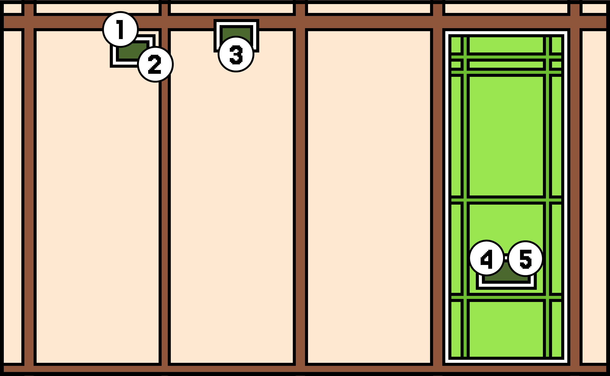
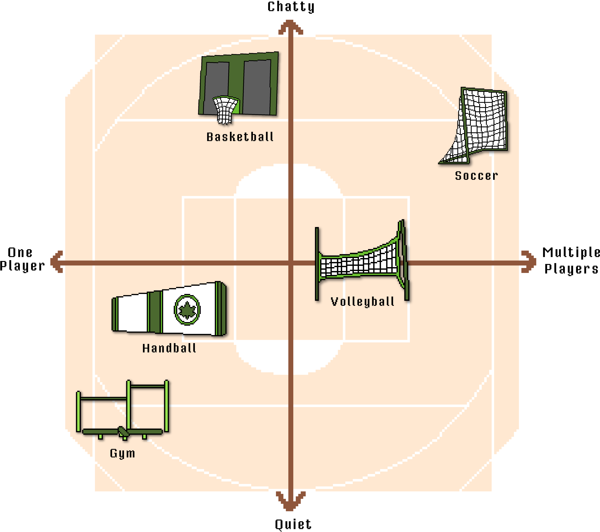

I grew up on the corner of 82nd St and 25th Ave, listening to the planes fly by every 20 minutes. It had been pouring rain that day as I went to go see a show with a friend, Jonathan, and his family at night. When they dropped me off, I opened the door and told him we'd meet up when I came be back from Orlando in two weeks. With that, I ran into the pouring rain and back into my apartment. The next time I'd see him or New York City would be 5 years later.
My Old Neighborhood
East Elmhurst, Queens
By Kevin Cadena
The Past
Since moving back to NYC in 2017, I get the urge to visit my old neighborhood in East Elmhurst Queens every few years. I make sure to stop by my old home at the corner of 82nd St and 25th avenue and also the Gorman Playground. Sadly, there isn't much of anything to tie me to either space anymore. The landlady who owned the building has passed and her daughter sold it and similarly, the Gorman playground was completely renovated though there are a few pieces still left that I can look back on.

Learn about the neighborhood:
Memories
1. My Door
During the school year, I'd wait inside of the door with my mom until the bus to my elementary school arrived. Only then would my mom let me go outside. After the school day when the bus was dropping me off, my dad would be waiting in front of it to pick me up.
2. My Bus Stop
Being a child, I didn't travel very much outside of my neighborhood. It was normally reserved for the weekends when my grandmother watched me. We would take the Q33 82nd / 25th Ave bus stop around the corner to start our day. It often involved going into the shopping areas of Jackson Heights or then to get onto the 7 Train to go to Flushing Meadows Park.
3. A Car Parked in a Familiar Spot
My dad was the only one of us who had a car and could drive while we lived here. He would drop us off in front of the apartment and then go down to the next block to park the car in the same spot. I would plead with him to let me stay with him in the car and so we could walk back together.
4. & 5. Old Playground Reminders
As stated, the playground has been completely rennovated in the time since I've come back. The only things that remain as reminders of the previous playground, are these painted metal graphics that are hung on the side of the building in front of the playground. There were two of them. This one is a boy riding a snail and the other one is...
An Ode to Time Gone By
I remember when I was first installed—how beautiful the park was back then. It was as bright and full of color as the fresh coat of paint I wore. Children used to run past me, laughing, their voices high and carefree. “Look, I'm like her,” they'd say, trying their best to mimic me. Sometimes they managed it, though more often it ended in scraped knees, tears, and parents rushing in with soft voices and outstretched arms. Year after year, I could count on a man with a full head of hair to come and paint me fresh again. It became a kind of ritual. Then, one year, he simply stopped coming.
Left to weather the seasons on my own, I began to feel the heat baking into my frame. The children started to pass me by, distracted by newer things. “Woah, look at these frogs!” they shouted, squealing as the metal frogs sprayed arcs of water into the summer air. I watched them from a distance. I still could, for a time, until the man returned. He was older then—his hair gone, his back a little stooped. I had hoped he was coming to care for me again, to give me new paint, maybe a bit of attention.
I thought I might still have some purpose. But instead, he brought tools and a team, and I was moved. No longer on the building where I could look out over the playground, I was set against a fence that smelled faintly of garbage. From there, I could no longer see the children. And I knew then that the man would not be coming back again. All I have left is the sound of the children's laughter, drifting through the summer air. It reaches me still, even as the sun scorches what remains of my once-bright surface.
But I'm still here...
The Present
As it did for me as a child, the park continues to serve as a hub for everyone living nearby. Given how residential the neighborhood is, a public space like this is crucial. During my visits, the park felt full of life as people made use of the gym equipment, soccer and basketball nets, and, for the children, all the colorful playground structures. Watching how actively the space is used helped lift the sadness I felt from having been so removed from the neighborhood for more than two decades now. It reminded me of the park’s ongoing value to the community and after spending some time observing the park, I created the following diagrams:
Playground Fun
Sports in the Park
Final Reflections
I leave the playground full of happiness seeing how all the residents have continued to make the area theirs and wonder how the park will change when I visit it again in a few years time.